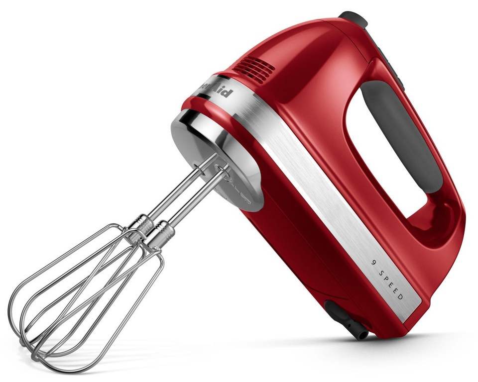

Миксер ручной BORK B782 VS KitchenAid 5KHM9212
Современная техника отличается от ретро тем, что экономит самое ценное на сегодняшний день – время. Ретро дизайн - это на любителя, а вот ретро технологии это вчерашний, а быть может и позавчерашний день.
KitchenAid 5KHM9212
Преимущества KitchenAid, которые пытаются продать:
- Дизайн и выбор цветов
- Страна производства США
- Срок гарантии 2 года
- Компания, которая изобрела миксеры в 1919 году
- KitchenAid переводится, как кухонный помощник
Характеристики KitchenAid:
- Потребляемая мощность: 85 Вт
- Количество скоростей: 9
- Скорость вращения насадок: 1300 - 2300 об/мин
- Тип управления механическое
- Тип двигателя DC постоянный ток
-
Насадки:
Венчики из 4-х контуров – 2 шт
Насадки для теста – 2 шт
Венчик из 16 контуров – 1 шт
Диск для взбивания напитков – 1 шт
Преимущества миксера BORK B782:
- Продуманная конструкция корпуса и плавающая подвеска двигателя сводит вибрацию и шум при работе миксера к минимуму
- В комплект миксера BORK B782 входит уникальная насадка блендер. Измельчайте, замешивайте, взбивайте и готовьте пюре одним прибором
- Запатентованная форма основания ножки блендера создает циклон в посуде, что позволяет измельчать и перемешивать продукт не перемещая блендер
- Насадка от разбрызгивания позволяет измельчать небольшие количества продукта в любой посуде
- Универсальный 3D нож идеально смешивает и измельчает как самые плотные, так и самые воздушные продукты
- Уникальные двухконтурные тестомесы приготовят плотное тесто ровной текстуры для пасты или пельменей максимально быстро и насытят его кислородом
- Устойчивая крестообразная опорная стойка позволяет удобно ставить миксер между этапами приготовления, а также выступает в роли смотки для провода питания
- Специально сконструированные вентиляционные отверстия направляют воздушный поток назад, предотвращая распыления муки в процессе замешивания
- Сделано в Швейцарии
Покупая KitchenAid, вы покупаете не только ретро дизайн, но и ретро технологии.